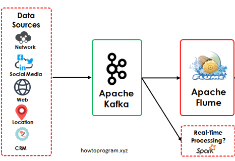

Big Data
Materia: Extracción
de conocimiento en bases de datos
Profesor: José Gustavo
Almanza
Vázquéz
Integrantes:
- Gabriel Vazquéz Miranda
- Rodrigo Antonio Ramirez Mendez
- Cristina Almanza Carmona
- Francisco Javier Hernandez Arredondo
Inicio
El término "Big Data" se popularizó en la década de 2000, pero su origen se remonta a mucho antes. Uno de los puntos de partida se encuentra en los primeros años de la informática, cuando las empresas comenzaron a enfrentarse a grandes volúmenes de datos y a la necesidad de almacenarlos y procesarlos de manera eficiente. Sin embargo, el verdadero origen del término y su crecimiento exponencial se puede atribuir a la explosión de datos digitales que ocurrió con la proliferación de Internet, el crecimiento de las redes sociales, la digitalización de los negocios.Big Data
Big Data se refiere a conjuntos de datos extremadamente grandes y complejos que no pueden ser procesados o analizados utilizando métodos tradicionales de procesamiento de datos.Esquema de Big Data
Definición de objetivos
- Identificar los objetivos comerciales o de investigación.
- Determinar qué preguntas se buscan responder con el análisis.
Recopilación de datos
- Identificar fuentes de datos relevantes.
- Ingesta de datos desde diversas fuentes.
- Escalabilidad y manejo de grandes volúmenes de datos.
Limpieza y preparación de datos
- Identificar y corregir errores en los datos.
- Eliminar datos duplicados o incompletos.
Análisis exploratorio
- Explorar la naturaleza de los datos utilizando técnicas de visualización.
- Identificar patrones y tendencias.
Análisis avanzado
- Aplicar técnicas estadísticas o de aprendizaje automático para obtener información.
- Realzar análisis predictivos o prescriptivos.
Interpretación de resultados
- Interpretar los hallazgos de análisis en relación con los objetivos.
- Extraer conclusiones y recomendaciones basadas en los resultados.
Visualización y comunicación
- Presentar los hallazgos de manera clara y comprensible utilizando visualizaciones de datos.
- Comunicar los resultados a las partes interesadas de manera efectiva.
Iteración y mejora continua
- Evaluar la efectividad del análisis y las decisiones tomadas.
- Identificar áreas para mejora y realizar iteraciones en el proceso.
Procesamiento de datos
Ingesta de datos
La ingesta de datos implica la recopilación y adquisición de datos desde diversas fuentes, como sistemas transaccionales.Almacenamiento distribuido
Los datos ingestados se almacenan en sistemas de almacenamiento distribuido, como Hadoop Distributed File System (HDFS), Amazon S3.Procesamiento distribuido
Los datos almacenados se procesan de manera distribuida utilizando tecnologías como Apache Spark.Análisis y transformación
Durante el procesamiento, los datos pueden ser analizados y transformados según sea necesario para cumplir con los objetivos.Optimización de consultas y rendimiento
Se aplica técnicas de optimización de consultas y rendimiento para mejorar la eficiencia del procesamiento de datos.Generación de resultados
Una vez que se complete el procesamiento de datos, se generan resultados en forma de informes, visualizaciones y análisis.Entrega de resultados
Los resultados del procesamiento de datos se entregan a las partes interesadas a través de diversos canales, como informes automatizados, paneles de control interactivo.Herramientas para ingesta de datos
Apache Kafka
Apache Kafka es una plataforma de streaming distribuida que se utiliza para la
ingesta de
datos en tiempo real, el almacenamiento y la transmisión de eventos a gran escala.

Apache Flume
Apache Flume es una herramienta de ingesta de datos que se utiliza para recopilar,
agrupar y mover grandes volúmenes de datos desde diversas fuentes a un sistema de
almacenamiento centralizado.
Apache kafka
Herramientas para el almacenamiento de datos
Hadoop Distributed File System (HDFS)
Amazon S3 (Simple Storage Service)
Hadoop Distributed File System (HDFS)
HDFS es un sistema de archivos distribuido diseñado específicamente para el procesamiento de datos en clústeres de servidores Hadoop.Amazon S3 (Simple Storage Service)
Amazon S3 es un servicio de almacenamiento en la nube ofrecido por Amazon Web Services (AWS) que proporciona almacenamiento escalable y duradero para datos en la nube.